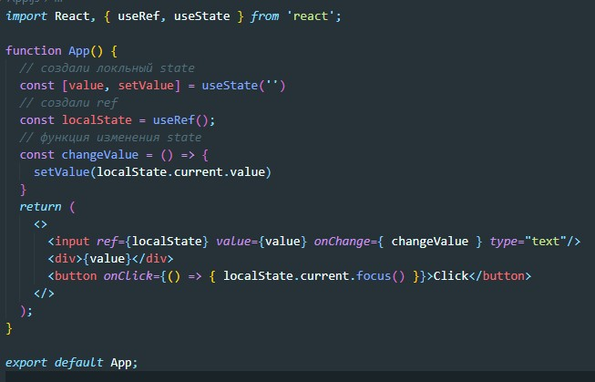

useRef - как и useState создает некое состояние, но которое не вызывает render при изменении этого state. Хук useRef возвращает нам объект у которого есть ключ current. В качестве входного параметра useRef принимает начальное состояние state.
Т.е. useRef полезен если нам нужно создать локальную переменную, изменение которой не вызывает render но которая при rendere будет сохранять свое значение.
Пример создания
Так же объект который вернул нам useRef мы можем использовать как обычную ref ссылку к элементу virtualDOM
Так же с помощью полученного объекта мы можем передать фокус - localState.current.focus()